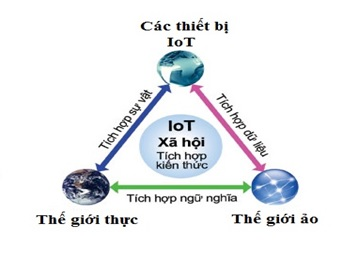
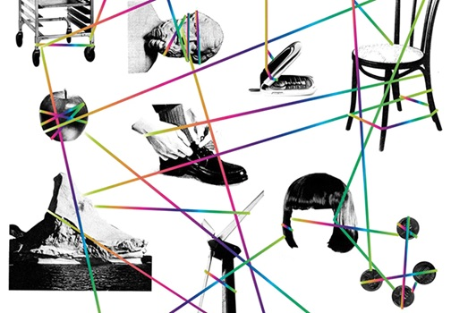
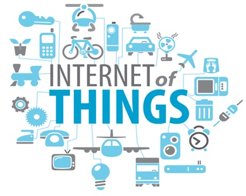
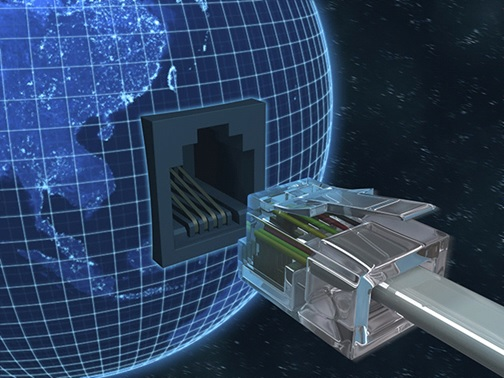

SỰ PHÁT TRIỂN CỦA MẠNG INTERNET VÀ INTERNET OF THINGS
Học kỳ I, năm học 2018-2019
5. MỘT TRONG NHỮNG XU HƯỚNG PHÁT TRIỂN CỦA INTERNET TRONG TƯƠNG LAI.
INTERNET OF THINGS

Internet of Things là gì?
Thực chất, biểu hiện của Internet of Things (IoT) đã xuất hiện ngay từ thời kỳ sơ khai của Internet, khi các nhà phát minh mong muốn kết nối tất cả mọi thứ qua một mạng lưới đồng nhất để có thể điều khiển chúng phục vụ cho mục đích của con người.
Trong các tư liệu về IoT, người ta thường nhắc đến một chiếc máy bán nước giải khát tự động tại trường Đại học Carnegie Melon (Mỹ) vào đầu những năm 1980 như là một thiết bị đầu tiên mở màn cho xu hướng này, chiếc máy được lập trình để có thể kết nối với người điều khiển qua Internet, nhằm kiểm tra tình trạng của máy và bổ sung nước khi cần thiết mà không cần sự tiếp xúc kiểm tra trực tiếp.

Sau đó, khái niệm Internet of Things chỉ thực sự được đưa ra vào năm 1999, khi mà người ta bắt đầu nhận thấy tiềm năng của xu hướng này, bên cạnh việc mạng Internet cũng như nhiều rào cản về mặt khoa học công nghệ đã dần được khai phá.

Theo định nghĩa từ Wikipedia:
Internet of Things (IoT) là một kịch bản của thế giới, khi mà mỗi đồ vật, mỗi đồ vật, con người được cung cấp một định danh của riêng mình, và tất cả có khả năng truyền tải, trao đổi thông tin, dữ liệu qua một mạng duy nhất mà không cần đến sự tương tác trực tiếp giữa người với người, hay người với máy tính. IoT đã phát triển từ sự hội tụ của công nghệ không dây, công nghệ vi cơ điện tử và Internet.
Như vậy có thể tạm hiểu, Internet of Things là khi tất cả mọi thứ đều được kết nối với nhau qua mạng Internet, người dùng (chủ) có thể kiểm soát mọi đồ vật của mình qua mạng mà chỉ bằng một thiết bị thông minh, chẳng hạn như smartphone, tablet, PC hay thậm chí chỉ bằng một chiếc smartwatch nhỏ bé trên tay.
Gần đây, Internet of Things còn bao gồm cả những giao tiếp theo kiểu máy với máy (M2M), hạn chế sự tác động của con người nhưng chủ yếu được áp dụng trong sản xuất năng lượng hay các ngành công nghiệp nặng.
Viễn cảnh tưởng chừng chỉ có trên phim ảnh này đã dần hiển hiện trên thực tế, với sự phát triển của Nhà thông minh, TV thông minh, tủ lạnh thông minh,…. và cũng không thể không kể tới sự mở rộng không gian địa chỉ lên IPv6 thay vì IPv4 như trước đây.
Internet of Things là tương lai của thế giới
Mặc dù đã manh nha từ lâu nhưng kỷ nguyên Internet of Things chỉ thực sự được sự được chú ý và bùng nổ trong những năm gần đây, sau sự phát triển của smartphone, tablet và những kết nối không dây,…

Và ngay sau khi nhận được sự chú ý của cộng đồng, IoT đã cho thấy tiềm năng của mình với những số liệu đáng kinh ngạc.
Cisco, nhà cung cấp giải pháp và thiết bị mạng hàng đầu hiện nay dự báo: Đến năm 2020, sẽ có khoảng 50 tỷ đồ vật kết nối vào Internet, bao gồm hàng tỷ thiết bị di động, tivi, máy giặt, …
Để thấy được sự phát triển của lĩnh vực này, họ cũng đưa ra số liệu vào năm 1984, khi mà Cisco mới thành lập mới chỉ có khoảng 1.000 thiết bị được kết nối mạng toàn cầu, đến năm 2010, con số này đã lên mức 10 tỷ.
Intel, đơn vị mới tham gia vào thị trường sản xuất chip cho các thiết bị thông minh phục vụ IoT cũng đã thu về hơn 2 tỷ USD trong năm 2014 từ lĩnh vực này, tăng trưởng 19% so với năm 2013.
Và không thể không kể tới một thương hiệu Việt Nam là Bkav cũng đã đạt được những thành tựu đáng ghi nhận về Internet of Things. Hệ thống nhà thông minh SmartHome của Bkav là một tổ hợp các thiết bị thông minh trong 1 ngôi nhà, đều được kết nối Internet và có thể tự động điều chỉnh cũng như điều khiển qua smartphone.
Bên cạnh đó, các ông lớn như Google, Apple, Samsung, Microsoft cũng không hề giấu diếm ý định xâm nhập thị trường này, hứa hẹn một cuộc cạnh tranh mạnh mẽ trong thời gian tới đây, đưa kỷ nguyên IoT đến sớm hơn với mọi người.
Rõ ràng, Internet of Things có thể thay đổi hoàn toàn cách sống của con người trong tương lai. Khi mọi thứ đã được “Internet hóa”, người dùng hoàn toàn có thể điều khiển chúng từ bất cứ đâu, chỉ cần một chiếc điện thoại có kết nối Internet. Sở hữu những thành tựu trong lĩnh vực này nghĩa là bạn đang nắm giữ trong tay chìa khóa thành công của mọi thời đại. Internet of Things chính là xu hướng của tương lai.